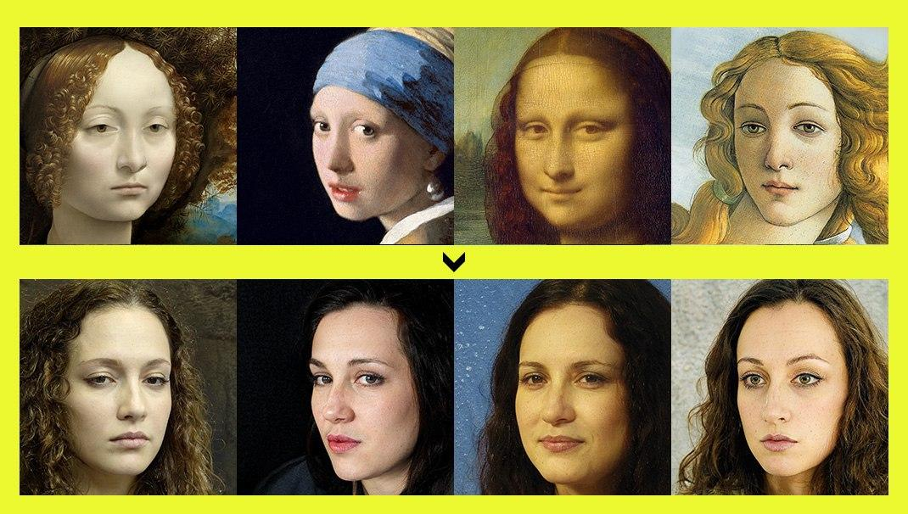
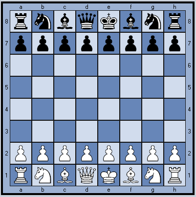
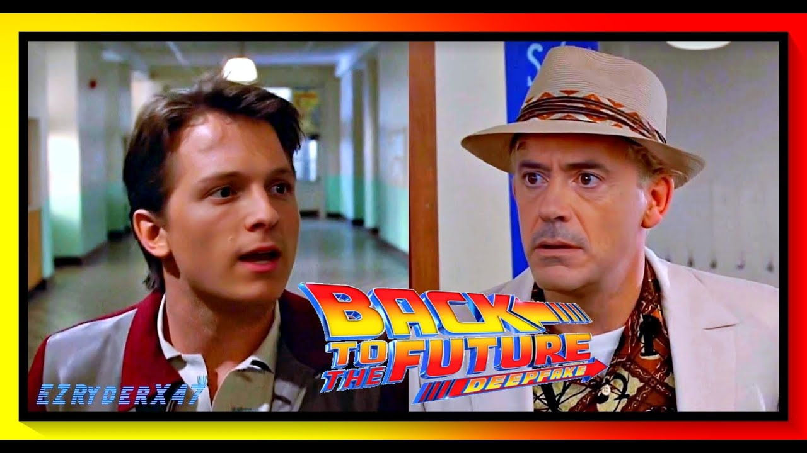
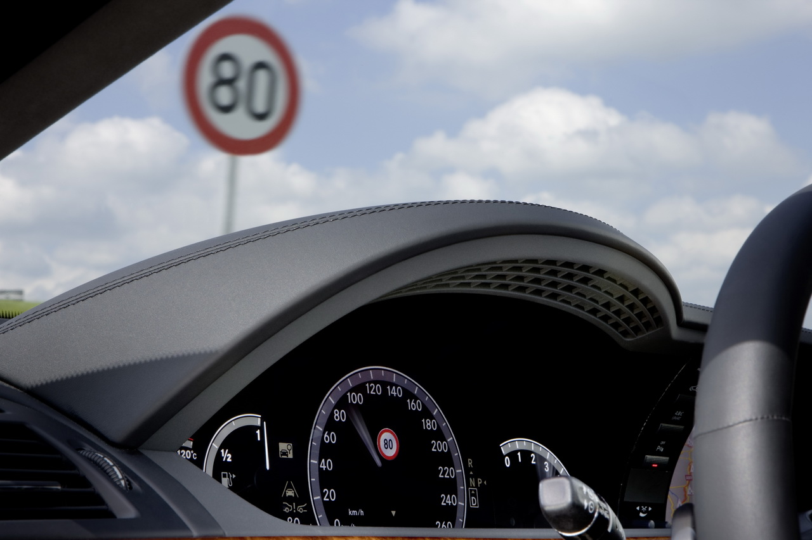
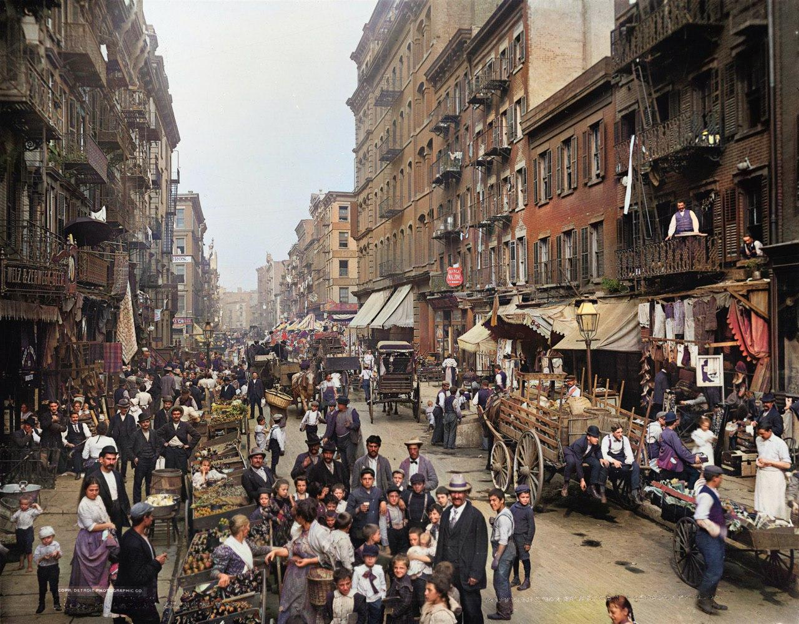

Примеры нейросетей
Поиск людей, похожих на художественный портрет
Что будет, если дать немного модернизированной нейронке StyleGAN2 на вход лицо с классической картины и попросить сгенерировать лица людей, которые по мнению нейронки максимально подходят под эти картины? Получится что-то вроде такого, как ниже. 
Шахматная партия с программой, пишущей тексты
Недавно была сыграна удивительная шахматная партия. Играла компьютерная программа против человека. Но удивителен не результат партии (шахматные программы сегодня легко обыгрывают даже чемпионов мира, хотя в этот раз победил человек), а то, что это была за программа. Это GPT-2, нейросеть, которая продолжает за тебя написанный текст.
GPT-2 успешно сопротивлялась в партии против человека … даже не зная о том, что играет в шахматы. Нейроcети дали тексты шахматной нотации (записи ходов латиницей, т.е. e2-e4 и т.д.) – базу из нескольких миллионов сыгранных шахматных партий. При этом программу не учили правилам шахмат, для неё все эти записи партий были просто текстом. 
«Пересадка» лиц актёров
DeepFake-ролики становятся всё более правдоподобными – вот, например, Роберт Дауни младший и Том Холланд в «Назад в будущее». Можете потом сказать внукам, что это вырезанная сцена из «Мстителей: Финал». Но лучше, конечно, покажите оригинал. 
Один из главных популяризаторов Deepfake – Hao Li, у него миллион разных регалий, в том числе он сыграл ключевую роль в появлении анимоджи на IphoneX, бывший научный руководитель ILM и много чего еще.
Распознавание дорожных знаков для ограничения скорости автомобиля
В автомобилях Tesla есть опция Speed Assist – камера распознаёт дорожные знаки с ограничением скорости и передаёт данные системе круиз-контроля. Удобная фича – водителю не надо лишний раз обращать внимание на дорожные знаки, машина сама их видит и разгоняется только до разрешенной скорости. 
Но в лаборатории McAfee нашли занятный баг – наклеив на дорожный знак всего одну наклейку, систему распознавания можно обмануть и заставить машину разгоняться до 85 миль в час вместо 35. Баг не работает в новых моделях Driver Assistant, но много машин используют старую версию. Побыстрее бы его пофиксили, а то ведь такую наклейку могут наклеить на знак не только исследователи в рамках эксперимента.
Колоризация фотографий
С каждым годом качество колоризации становится лучше, на фото ниже новая версия алгоритма DeOldify, пока не выложенная в паблик, но которая уже сейчас выглядит лучше, чем все, что было до этого. 
Вы можете скинуть автору алгоритма ЧБ фото, и он вышлет вам, что получилось.